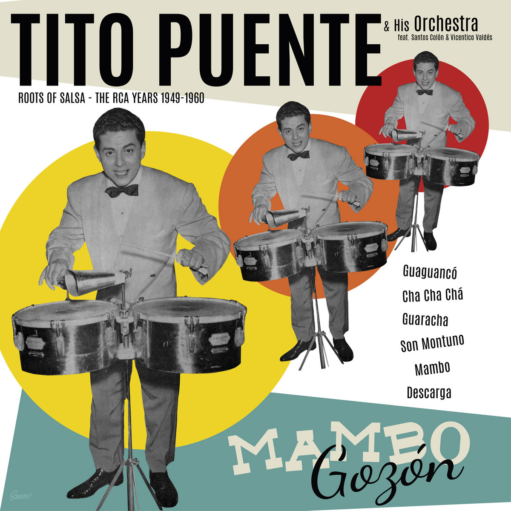

MUS 302 · What to Listen for in Music
Module 3: Latin Diasporic Traditions · Listening Guide · Track 1 of 5
Track 1 Tito Puente, "Oye Como Va" (1962)

Context
Puente before the song: Spanish Harlem, Machito, the Navy, and Juilliard
Ernest Anthony Puente Jr. was born on April 20, 1923, at Harlem Hospital in Manhattan, the son of Ernest and Felicia Puente, Puerto Ricans who had moved from the island to a few years before. His father worked as the foreman at a razor blade factory. The family moved frequently in his early years but mostly stayed in El Barrio, the East Harlem neighborhood that had been the center of Puerto Rican New York since the 1920s. Puente was, by his own account and his neighbors', a relentlessly noisy child. He drummed on pots, on window frames, on the building's radiators. The neighbors complained. His mother, the story goes, started him in twenty-five-cent piano lessons at a local music school as a way to channel the noise. By age ten he had switched to drums. By thirteen he was playing professionally in his neighborhood's Latin dance bands.
The break that mattered most came when Puente was about sixteen. and his Afro-Cubans, the Cuban-Puerto Rican orchestra that was already becoming the central institution of Latin music in New York, lost their drummer to the wartime draft. Puente took the drummer's place. He played with Machito until 1942, when his own draft notice arrived. He served three years in the US Navy on the escort carrier USS Santee, in nine combat engagements in the Pacific, and was discharged with a Presidential Unit Citation. Aboard ship he had befriended the swing bandleader Charlie Spivak, who was serving as a Navy musician, and through Spivak he absorbed the harmonic and arranging vocabulary of American big-band . Puente also taught himself the saxophone, the piano, and the well enough to use them later as composing tools.
After his discharge in 1945, Puente used the GI Bill to study conducting, orchestration, and theory at the Juilliard School from 1945 to 1947. He came out the other side a fully trained big-band arranger who happened to be a virtuoso on the , the paired high-pitched drums that had been a workhorse of Cuban dance bands but had not, before Puente, been moved to the front of the bandstand. He formed his own ten-piece group, the Piccadilly Boys, in 1948, expanded it shortly afterward into the Tito Puente Orchestra, and recorded his first hit single, "Abaniquito," for the new New York label Tico in 1949. By the early 1950s, the orchestra was one of three resident bands at the on West 53rd Street, alongside Machito's Afro-Cubans and the orchestra of . The musicologist Raul Fernandez has argued that what Puente brought to that scene that nobody else had was the skill set of a Juilliard-trained arranger applied at full virtuoso speed to dance music: the ability to write a five-trumpet, four-saxophone, four-trombone arrangement that swung as hard as a small Havana .
The Palladium era: Cuban music and Puerto Rican musicians
The framing reading argued that one of the central facts of the New York Latin music scene from the 1940s through the 1960s is that the music played in the city's ballrooms and recorded by its labels was overwhelmingly Cuban in form (, , , ) but was performed and arranged largely by Puerto Rican musicians, born in New York or recently arrived through the postwar . The Palladium Ballroom, on West 53rd Street and Broadway from 1947 to 1966, was the central institution where that exchange happened. Cuban bandleaders Machito, , and brought the forms; Puerto Rican musicians Puente, Tito Rodríguez, Charlie and Eddie Palmieri, Ray Barretto, and many others elaborated and extended them. The audience was racially and ethnically mixed in a way that few midcentury American venues were: Puerto Rican, Cuban, Italian, Jewish, African American, Irish dancers shared the floor four nights a week.
Puente's own framing of this, in interviews late in his life, was that he had grown up in El Barrio listening to Cuban records on the radio (Beny Moré, Arsenio Rodríguez, the ) the way his Anglo contemporaries had grown up listening to Glenn Miller and Tommy Dorsey. The Cuban repertoire was simply, for him and for the neighborhood that raised him, the popular music of his childhood. The musicologist has argued that the New York mambo era is best understood not as a Cuban music played by Puerto Ricans in exile from a Cuban scene, but as a New York music whose Caribbean substrate was, at that historical moment, mostly Cuban. The closing of the Palladium in 1966 (after a police drug raid the Cabaret License Law was used to enforce) and the US embargo against Cuba after 1962 together cut off the live Cuban supply line. What replaced it, by the late 1960s and early 1970s, was a New York-grown synthesis of Cuban forms with Puerto Rican folk traditions, jazz harmony, and the urban sound of the borough that the generation called . Puente's "Oye Como Va," from 1962, sits at the hinge: late mambo era, the Cuban supply line about to close, the New York Latin sound about to become something else.
The recording: El Rey Bravo, the throwaway track, and Cachao's "Chanchullo"
"Oye Como Va" was recorded in 1962 at the Hotel Riverside Plaza Ballroom in Manhattan, a venue with strong acoustics that the parent company, Roulette, used regularly for Latin dates. The session was produced by the swing-era veteran Teddy Reig. The song was released that same year as the second cut on side A of the LP ("The Brave King"), Puente's only LP for Tico that year. The music journalist Cary Ginell has described the song as it sat on the original album as something of a "throwaway," tucked between flashier tracks like the high-tempo opener "Malanga Con Yuca," and the album as a whole as a working dance-floor record from a working bandleader's mid-career. Puente himself, looking back on the song after Santana's cover had made it famous, was matter-of-fact about its origins: it had been written quickly, recorded quickly, released to no particular reception.
The song's central musical idea was not, strictly speaking, original. The musicologist Max Salazar and the writer Cary Ginell have both documented that the repeated piano of block chords that holds "Oye Como Va" together is closely modeled on the introduction to "Chanchullo," a 1957 mambo by the Cuban bassist and bandleader Israel "" López. Puente knew "Chanchullo" because he had recorded it himself in 1959, on his RCA album Mucho Cha Cha. Three years later, working on a new tune, he reached back to the same shape, slowed it slightly, added a vocal hook on top, and let the band play. The song's chorus refrain, "Oye cómo va, mi ritmo / bueno pa' gozar, " (literally "listen how my rhythm goes, good for enjoying, mulata"), gives the song its title and its hook. The word mulata, which describes a woman of mixed Black and European descent, is contested: it carries the colonial racial-classification system of the Spanish Caribbean inside it, and many Spanish-speakers today consider it offensive. In Cuban dance-music lyrics of the 1950s and early 1960s it was nonetheless a stock term of address, frequently appearing as a celebratory or romantic invocation, as it does here. The refrain is sung by the chorus rather than a solo lead, in the choral-tandem manner characteristic of cha-cha-chá in its 1950s prime, and the choice points to the song's stylistic moment: 1962 sits at the tail end of the cha-cha-chá era in New York, with the form already giving ground to the that would arrive a few years later and to the New York-grown salsa synthesis a decade after that.
The personnel on the recording are documented on the album sleeve and reissue notes. The orchestra was large by any standard: three trumpets (Jimmy Frisaura, Pedro "Puchi" Boulong, Pat Russo), one (Barry Rogers, who would shortly become Eddie Palmieri's musical partner and a defining voice of New York salsa), four saxophones plus a baritone (Rafael "Tata" Palau, Jesús Caunedo, Al Abreu on tenor; Pete Fanelli on alto; Shep Pullman on baritone), on flute (Pacheco was a Dominican flutist who would three years later co-found Fania Records and rename the New York Cuban-based dance idiom "salsa"), Pupi Legarreta on violin, Gilberto López on piano, Bobby Rodríguez on bass, José Mangual Sr. on bongos, Juan "Papi" Cadavieco on congas, and Puente himself on timbales, leading the band. Lead vocals and chorus were handled by Santos Colón and Rudy Calzado, with Gabriel "Yayo el Indio" Vega and Rafael "Chirivico" Dávila completing the chorus. (Rudy Calzado was the brother of the Cuban composer Sergio Calzado, whose 1960 song "Te Enseñaré," recorded by the group Estrellas Cubanas, has a melodic figure the second section of "Oye Como Va" closely echoes.) The arrangement is what arrangers call a -plus-brass: the small Cuban dance ensemble of flute, violin, piano, bass, and percussion, with a full big-band brass section laid over it.
Reception, the Santana cover, and the long afterlife
"Oye Como Va" was a modest hit on the New York Latin dance-floor circuit in 1962 and 1963. It was not a hit and did not chart on the mainstream Billboard Hot 100. The album it sat on, El Rey Bravo, was reviewed politely in the Latin music press and then largely forgotten outside the dancers who knew it. Puente moved on. He recorded several more albums for Tico in the mid-1960s, returned to RCA briefly, and continued to lead the orchestra at Latin venues around New York and on tour through Latin America. He had recorded over a hundred sessions by the time his name reentered mainstream American conversation, and he had done so without "Oye Como Va" having very much to do with it.
What changed in 1971 was that Carlos Santana's band, which had broken nationally with the rock-Latin fusion of their first album in 1969 and the Woodstock performance that summer, released their second album, Abraxas, with a guitar-and-organ arrangement of "Oye Como Va" as one of the singles. That single reached number 13 on the Billboard Hot 100 and became one of the defining radio recordings of the early 1970s. Puente's own first reaction, by his account in interviews and on his 1999 album Mambo Birdland, was anger. He felt his song had been taken without permission and reworked into something he did not recognize. That anger softened, he said, the day his first royalty check arrived. Santana had credited Puente as the composer; that meant the songwriting royalties from one of the biggest American singles of 1971 came to a Latin bandleader who had spent his career working below mainstream American attention. By the late 1970s, Puente was opening live shows by introducing "Oye Como Va" with a tribute to Santana: "He put our music, Latin rock, around the world, man! And I'd like to thank him publicly 'cause he recorded a tune and he gave me credit as the composer of the tune."
The Track 3 listening guide, on the Santana version, will work through that 1970 recording in detail and ask what is gained and what is lost when the same song crosses from a New York mambo orchestra to a San Francisco rock band led by a Mexican-American guitarist. For now, the question is what the 1962 original is. It is a cha-cha-chá at the end of the cha-cha-chá era, recorded in New York by a Spanish Harlem-born Puerto Rican bandleader, building on a Cuban bassist's 1957 figure, performed by a multinational charanga-plus-brass orchestra, sung in Spanish, designed for Palladium dancers. The song the rest of the world would learn from Santana started as a working bandleader's late-period dance number. That gap, between what the recording was at the time and what it became afterward, is part of what the song is now.
Things to listen for
The recording is in the key of , a mode that you can hear as A natural minor with a raised sixth, or as a G major scale starting and ending on A. The harmonic motion is just two chords, A minor 7 and D7, alternating throughout the track. Most cha-cha-chá and a lot of later salsa lives on a similarly small harmonic budget: the song's energy comes from rhythm, ensemble texture, and arrangement, not from chord changes. The is 4/4. The is around 124 , in the bright midtempo range that is characteristic of cha-cha-chá. The full runtime is 4 minutes 33 seconds. The orchestra includes roughly twenty musicians, the largest ensemble of any track in this module.
First, the timbre of the lead instruments. The melodic top of the arrangement belongs to Pacheco's flute and Legarreta's violin, both instruments that came into the recording from the Cuban charanga tradition rather than from American big-band swing. The flute is a Cuban wooden five-key flute, a different instrument from the silver concert flute used in classical music: the wooden bore gives the tone a slightly hollow, breathy quality that cuts through a dance band the way a high trumpet does. The violin is one violin where a Cuban charanga of the 1940s might have used three or four, but it occupies the same role in the texture. Underneath them, three trumpets and four saxophones (with a baritone holding down the bottom of the sound) trade short rhythmic figures, never sustaining long notes, always punching the offbeats. Compare this top-heavy charanga timbre to the orchestral brass of the behind Celia Cruz: the Fania texture is built on saxophones and trombones, with the band's energy concentrated in the middle and lower brass. Puente's "Oye Como Va" is built around the higher, lighter instruments, with the brass functioning as rhythmic punctuation rather than sustained foreground.
Second, the texture, and specifically the relationship between the and the . The rhythm section is six musicians: piano, bass, congas, bongos, timbales, and the band's chorus singers as they fill space. They lay down the song's basic groove, the repeating block-chord that is the song's main musical idea. The horns and flute and violin sit on top, entering and exiting at specific moments, never simply doubling the rhythm section. The texture is what arrangers call layered, with each layer doing distinct work: the rhythm section as the song's chassis, the horns as its commentary, the flute and violin as its melodic top. Listen to how each layer can be heard independently. Compare this with the single-vamp texture behind James Brown's "Say It Loud", where the JBs build a similarly layered groove on a similarly small harmonic palette. The funk band of 1968 and the Latin orchestra of 1962 are doing structurally related work, in different musical languages, with different instruments. Both are arguments that what holds a long dance recording together is not chord changes but the ensemble's locked-in rhythmic relationship to itself.
Third, the form. After a brief unison introduction by the horns, the song settles into its groove and stays there. The piano plays the same two-bar block-chord ostinato through almost the entire track. The vocal chorus enters with the title refrain, repeating "oye cómo va, mi ritmo / bueno pa' gozar, mulata" in with the band. There are instrumental breaks where the horns push forward with written-out figures, and there are flute and saxophone solos over the same two-chord vamp. Near the end, the band executes what Cary Ginell calls a "surprise false ending," cutting off mid-phrase and then resuming. The form, with no bridge, key change, or second theme, is a single that the band decorates and undecorates for four and a half minutes. This is what makes "Oye Como Va" structurally close to American funk and to early loops, and it is one reason the song traveled so well across the genre lines that 1962 might have placed in its way: a rock band can play a vamp, a funk band can play a vamp, a hip hop track can sample a vamp. A through-composed song with a verse and a chorus and a bridge does not transport the same way.
Fourth, the central rhythmic figure, what gives the track its insistent forward motion. The piano tumbao plays its block chords not in even quarter notes but in an asymmetrical pattern across the bar. Counting the eighth notes inside each two-bar phrase, the chord hits fall at positions 1, 3, 6, 8, 12, 14 of sixteen, which the music theorist has parsed as three groupings of two-three, two-four, two-three: short-short, longer, short-short. The pattern is symmetrical, but the symmetry does not line up evenly with the four-beat grid. Your foot can find the (it is the cha-cha-chá basic step), but the chord hits keep arriving on slightly unexpected parts of the . That mismatch between the dancer's grid and the piano's grid is the song's central pleasure. It is closely related to what salsa pianists call a , the syncopated piano pattern that organizes a salsa song's groove section, and to what funk drummers call , the locked-in spot where the band's individual rhythmic patterns collectively imply the beat without any one of them simply spelling it out. Listen for how the piano hits relate to the bass hits and to the 's tumbao: each instrument plays a syncopated pattern, none of them play exactly on the downbeats together, and what your body hears as the beat is the implied result.
Reflective question
Puente was, by his own account, initially angry about the Santana cover and only came around once the royalty checks arrived. By the late 1970s he was telling audiences that Santana had "put our music, Latin rock, around the world." Listen to the 1962 recording on its own terms, before hearing the Santana version (which the Track 3 listening guide will work through). What is the 1962 recording doing that you can hear, specifically, that a 1971 rock arrangement might preserve, alter, or lose? Pick one moment in the recording (an entrance, a solo, a rhythmic figure, the refrain, the false ending) and argue from it. The question is not whether one version is better than the other; it is what the song is, in its 1962 form, that a different ensemble in a different city eight years later would have to make decisions about.
Sources for this section
Berríos-Miranda, Marisol; Dudley, Shannon; and Habell-Pallán, Michelle. American Sabor: Latinos and Latinas in US Popular Music. Seattle: University of Washington Press, 2017. The companion book to the Smithsonian-traveled exhibition; the most useful single overview of Puente, the Palladium era, and the Cuban-Puerto Rican exchange in midcentury New York.
Fernandez, Raul A. From Afro-Cuban Rhythms to Latin Jazz. Berkeley: University of California Press, 2006. Source for the analytical framing of Puente as a Juilliard-trained arranger applying conservatory craft to Afro-Cuban dance music.
Loza, Steven. Tito Puente and the Making of Latin Music. Urbana: University of Illinois Press, 1999. The standard scholarly biography, drawing on extensive interviews with Puente himself in the years before his death.
Salazar, Max. Mambo Kingdom: Latin Music in New York. New York: Schirmer Trade Books, 2002. Long-time New York Latin music journalist's history of the Palladium era; source for the documentation of the "Chanchullo" / "Oye Como Va" relationship.
Sublette, Ned. Cuba and Its Music: From the First Drums to the Mambo. Chicago: Chicago Review Press, 2004. Source for the framing of the New York mambo era as a New York music with a Cuban substrate, and for the historical context of the Palladium scene.
Ginell, Cary. "El Rey Bravo: Tito Puente's Latin Jazz Masterpiece." uDiscoverMusic, 2023. Source for the recording-venue documentation (Hotel Riverside Plaza Ballroom), the producer credit (Teddy Reig), the "throwaway" framing of the song's place on the album, and the "surprise false ending" detail.
Hein, Ethan. "Oye Como Va." The Ethan Hein Blog, September 2021. Source for the A Dorian analysis and for the parsing of the central piano rhythmic figure into 2-3-2-4-2-3 eighth-note groupings.
Craft Recordings. "Tito Puente's Seminal Masterpiece El Rey Bravo Returns to Vinyl." Press release, September 2023. Source for the 1962 release date, label confirmation, and reissue documentation, including AAA lacquers cut from original master tapes.
Wikipedia. "Oye Cómo Va." Heavily sourced article on the song's composition, recording, personnel, and afterlife; useful for cross-checking dates and personnel details, and for the Sergio Calzado / "Te Enseñaré" connection.
Wikipedia. "Tito Puente." Heavily sourced biographical article; useful for cross-checking the Navy service, Juilliard study, Piccadilly Boys, and Palladium-era documentation.